Equipment Overview and Platforms
How do I Know What I am Looking for?
There is plenty of assistive technology out there for adaptive gaming. Often times there is an overwhelming amount of options and it requires a combination of tools. This can be intimidating. This set of resources may seem overwhelming, but take the approach of determing what you are NOT interested in for yourself or the client you are working with. Put everything else on the "maybe" list and then begin evaluating the simplest option.
In general, there are three main ways to make adaptive gaming accessible:
- Alternative Access
- Controller Modifications
- Software and In-Game Settings
Getting Started: Choosing Your Access Path
Whether you are a player looking for a personal setup or a clinician supporting someone else, the goal is the same: maximize the player's existing access. Use these two questions to decide which sections of this resource to explore first.
1. Standard Controller Use
Can the player use a standard controller, even if only partially (e.g., just one side or specific buttons)?
- If Yes: Start with Controller Modifications. You can often add 3D-printed parts or purchase controller modifications to make a standard controller more accessible.
- If No: Jump to Alternative Access. This shows you how to build a custom setup using tools like assistive switches, joysticks, and more.
2. Sensory and Cognitive Needs
Are there barriers related to vision, hearing, or how information is processed?
- If Yes: Explore Software Features first. There may be in-game accessibility or additional softwares that might make gaming more accessible for the player.
- Note: Sometimes using assistive switches or joysticks found in Alternative Access can also assisist cognitive needs by simplifying or enlarging the inputs to the game.
The "Abilities-First" Strategy
We don't focus on what a player cannot do. Instead, we identify every reliable movement a player can make and turn those into game inputs.
Case Study: The Hybrid Setup Consider a player who has full use of their left hand but limited movement on their right.
- The Base: We might start with a Controller Modification like a one-handed controller.
- The Supplement: If certain buttons are still hard to reach, we don't give up on that controller. We add a "Hybrid" element—perhaps a Assistive Switch or voice command—to handle the missing actions.
Pro Tip: Great setups are rarely one-size-fits-all. They are often a mix of hardware "hacks" and software settings.
Flow chart for Deciding What Route to Take
Before deciding on what three methods of making the game accessible you choose, you should consider both the game and gaming system/platform that you are going to be playing on. The assistive technology required to play a simple game on a phone is much different than playing a complex game on a PlayStation system.
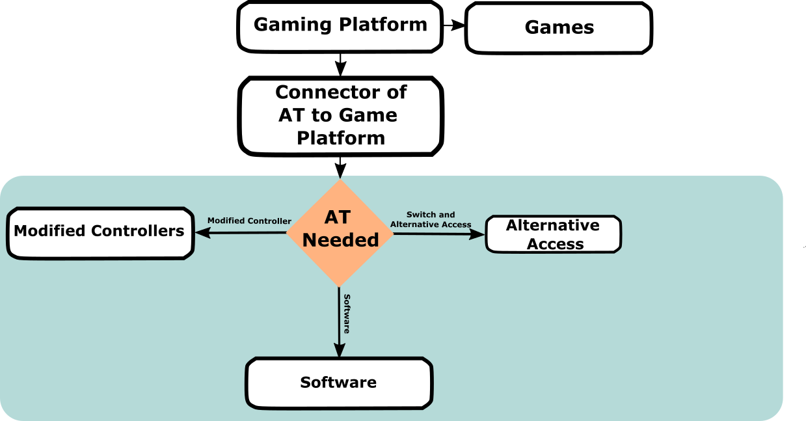
General Flow for Approcahing Customizing a Setup
The Platforms
You may already have a platform available to you or you may be looking for one to purchase. If purchasing a new platform, there may be some things you want to consider in terms of accessibility. We are often asked, "What is the most accessible platform?" There is no single answer; while some systems offer more flexibility, the "best" choice depends entirely on individual needs and technical factors.
We recommend starting with the equipment already available to you. Using what you have first is the most effective way to determine which features work for you and where you may need additional support.
Comparison of Current Generation Platform Accessibility Features
| Platform | Accessibility Considerations |
|---|---|
| Xbox Series X|S | • Adaptive Controller Xbox has their own "Xbox Adaptive Controller (XAC) that nativly connects to this system and Xbox One's. • Controller Customization Includes an app "Xbox Accessories" that allows you to remap and customize the inputs for an XAC or standard controllers. • Built in Accessibility check out the Xbox Accessibility Page for more information on the built in accessibility. |
| PlayStation 5 (PS5) | • Controller Haptic Tuning: Adjust vibration and trigger force on standard PS5 controllers. • Adaptive Controller: PlayStation has their own "Sony Access Controller (SAC)" that nativly connects to ONLY system. • Built in Accessibility check out the PlayStation Accessibility Page for more information on the built in accessibility. |
| PC (Windows) | • Flexibility: Compatibility for most controllers. • How to get games: You can use game launchers such as Steam, Epic Games, and more. Steam is the most common and has the most accessible options such as button remapping. |
| Nintendo Switch 2 | • Adaptive Controller Nintendo has a 3rd party adaptive controller called the "Hori Flex Controller" that nativly connects to this system and Nintendo Switch 1's. • Built in Accessibility check out the Nintendo Switch 2 Accessibility Page for more information on the built in accessibility. |
| Mobile Gaming (tablets/phones) | • Adaptive Controller The Xbox Adaptive Controller can connect to phones to allow assistive technology to work. There are also various switch interfaces made by assistive technology companies that can allow access. • Built in Accessibility the mobile device likley has various built in accessibility. This changes with each device/update frequently. |

Link: Xbox Accessibility Page

Link: PlayStation Accessibility Page

Link: Steam Accessibility Page

Link: Nintendo Switch 2 Accessibility Page
Comparison of Past Generation Platform Accessibility Features
| Platform | Accessibility Considerations |
|---|---|
| Xbox Series One | • There are less accessible options built into this Xbox than the newer one, however, the Xbox Adaptive Controller is still compatible. • This system still had Controller Assist and all features through Xbox Accessories that are found on the Xbox Series Systems and is compatible with the XAC. |
| Xbox 360 | • There are no adaptive controllers or specific alternative access for this platform. |
| PlayStation 4 (PS4) | • Note: The Sony Access Controller will not connect to this without an adapter. |
| PlayStation 3 (PS3) | • Note: The Sony Access Controller will not connect to this without an adapter. |
| Older PC's (Windows) | • It is important to consider the older and less powerful your PC is, the lower the ability to launch and successfuly play games is. |
| Nintendo Switch 1 | • There are less accessible options built into this Nintendo Switch than the newer one, however, adaptive controllers like the Xbox Adaptive Controller (with an adapter) and Hori Flex Controller will still connect. |
| Nintendo Wii | • We often get asked about Nintendo Wii's because they were a popular device for rehabilitation centres. • There are no adaptive controllers or specific alternative access for the this platform. |
Standard Controllers
When this resource uses the term "standard controllers" we are referring to the controllers that come default with the console or system. For example, a keyboard and mouse would be a standard input to a computer. Below are the main standard controllers currently still available by the platforms described above.
Xbox Controllers
Xbox Controllers
| Controller | Visual Reference | Notes |
|---|---|---|
| Xbox Series X|S | 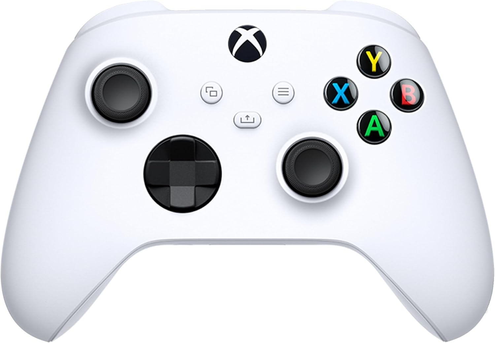 |
• Looks very similar to the Xbox One controller, however there are slight differences of sizes and additional functionalities. |
| Xbox Series Elite 2 | 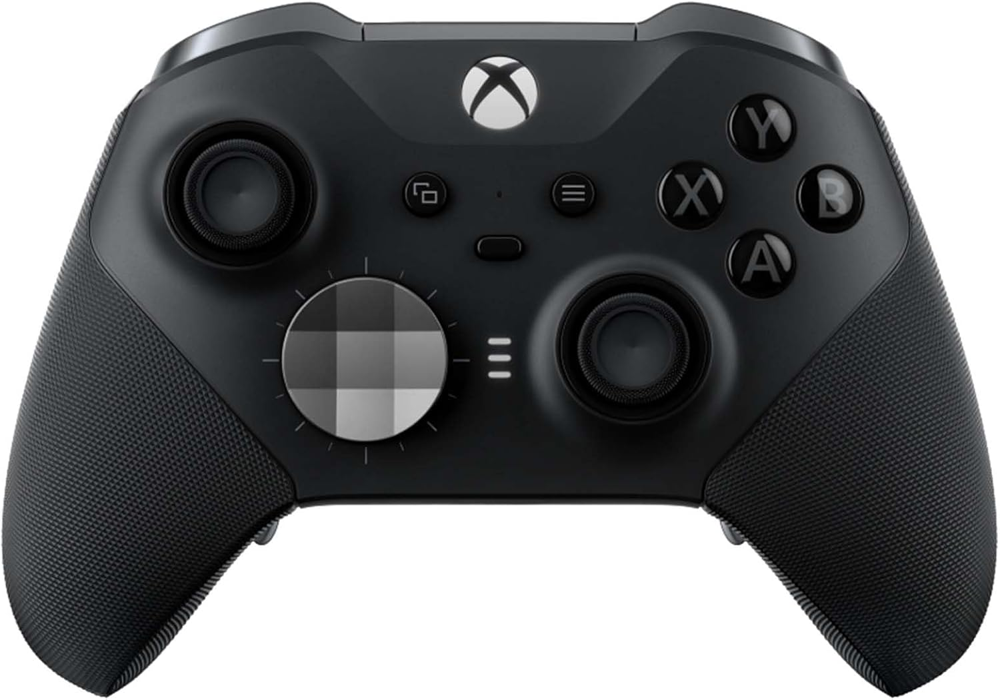 |
• This is the "pro" version of the Xbox Series X|S controller with added buttons on the bottom side of the controller and additional functionalities. |
| Xbox One | • This is the previous version of the Xbox Controller and is often mistaken for a Xbox Series X|S controller. • The easiest way to spot the difference is it does not have the "share" button right on the middle of the controller that the Series X|S controller does. |
PlayStation Controllers
PlayStation Controllers
| Controller | Visual Reference | Notes |
|---|---|---|
| DualSense (PS5) |  |
|
| DualSense Edge (PS5) | 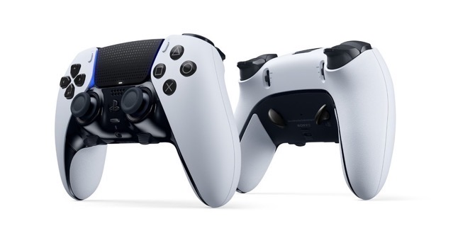 |
• This is the "pro" version of the DualSense controller. |
| DualShock 4 (PS4) | 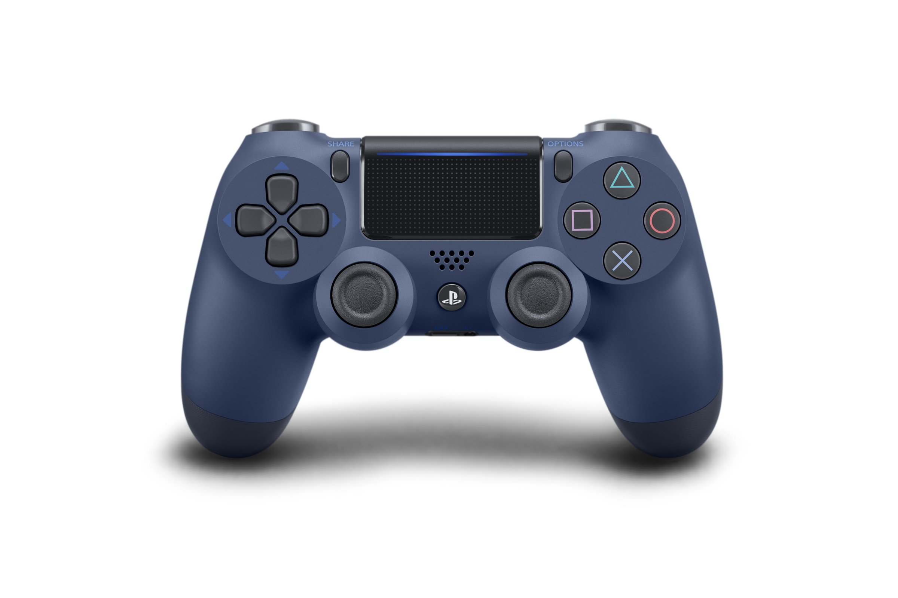 |
Nintendo Controllers
Nintendo Controllers
| Controller | Visual Reference | Notes |
|---|---|---|
| Nintendo Joy-Con 2 | 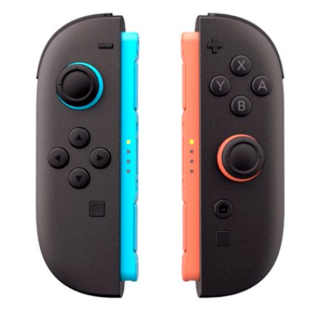 |
|
| Nintendo Pro Controller 2 | 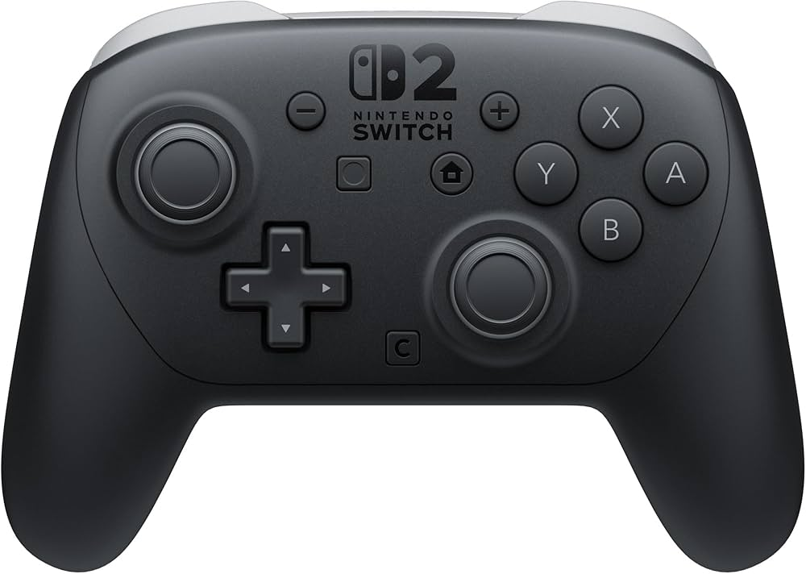 |
• This controller aims to look and feel more similar to what players expect from a standard controller. It looks similar to the Xbox controllers. |
| Nintendo Joy-Con 1 | 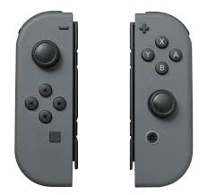 |
• Looks very similar to the Joy-Con 1's that were for the Nintendo Switch 1. There are key differences in size and connections. |
| Nintendo Switch 1 Pro Controller | 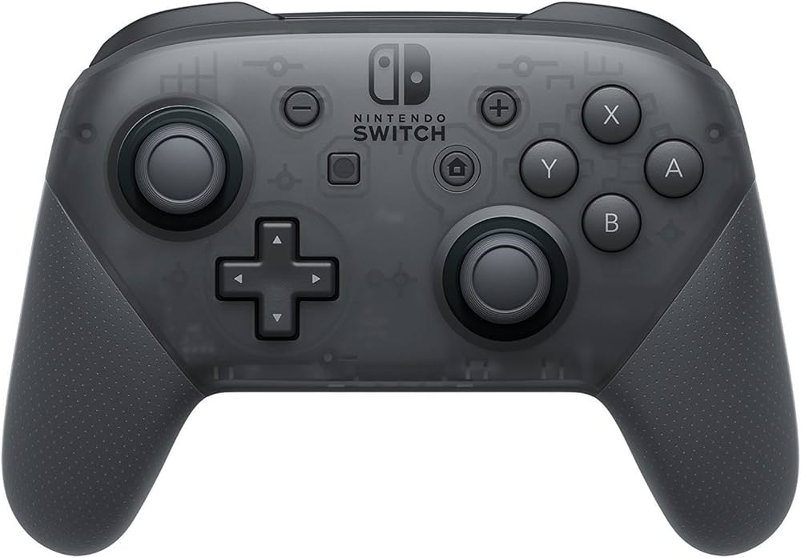 |
• Looks very similar to the Nintendo Switch 1 Pro Controller. This version has buttons on the underside and other additional features. |
It is important to note that the Nintendo Switch 1 and 2 Joy-Con controllers are designed in such a way that there is a lot of flexibility in how you can use them to play. There are two Joy-Cons (left and right or also called + and -) that work together or can work individually. There are three main types of ways you can hold/interact with the Joy-Cons.
Note
Some games will require you to play the whole game or certain parts in a specific mode. The Joy-Cons also have gyroscopic movement controlls in them that allow you to shake, wave, and move them around to interact. Again, only some games or part of games may utilize this feature.
Controller Mode This allows you to use both left and right Joy-Cons together to create a whole controller. The Nintendo Switch can be in its dock and connected to a TV or it can be out of the dock on its own stand.
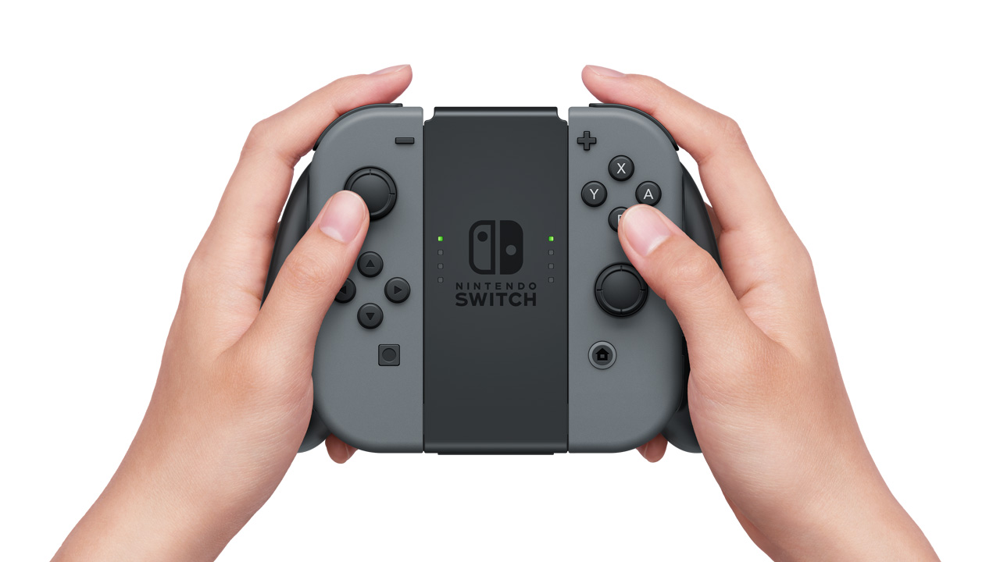
Joy-Cons in Controller Mode with Holder (Image Uses Joy-Con 1 Controllers)
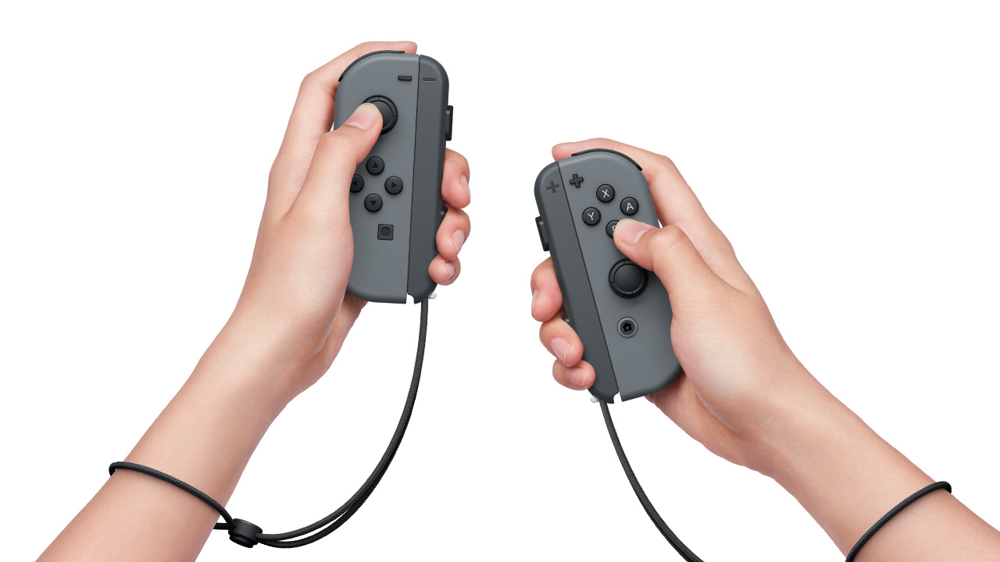
Joy-Cons in Controller Mode without Holder (Image Uses Joy-Con 1 Controllers)
Gamepad Mode Both Joy-Cons are attached to the Nintendo Switch directly and used out of the Nintendo Switch dock. This method can not be used in the dock.
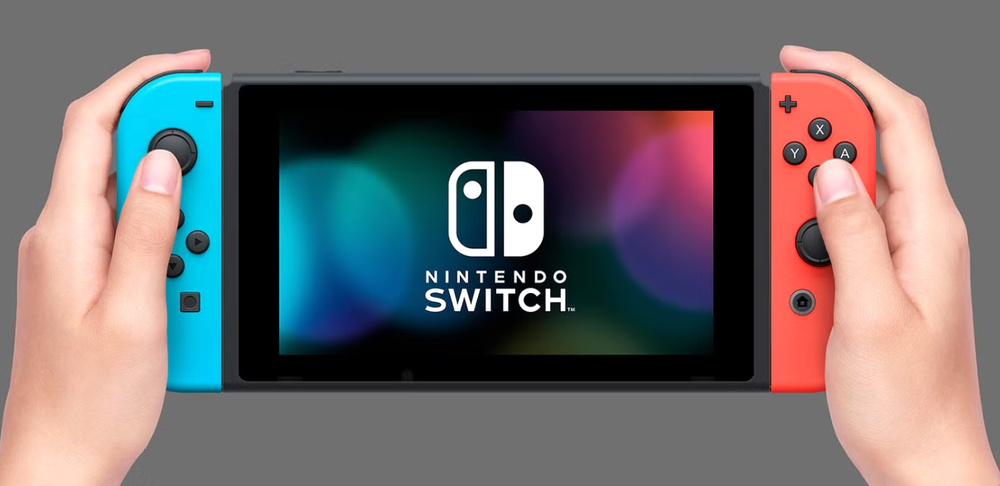
Joy-Cons in Gamepad Mode (Image Uses Joy-Con 1 Controllers)
Single Controller Mode Only one Joy-Con is used by the player. They hold it sideways and only have access to one thumbstick. Not every game can be played this way.
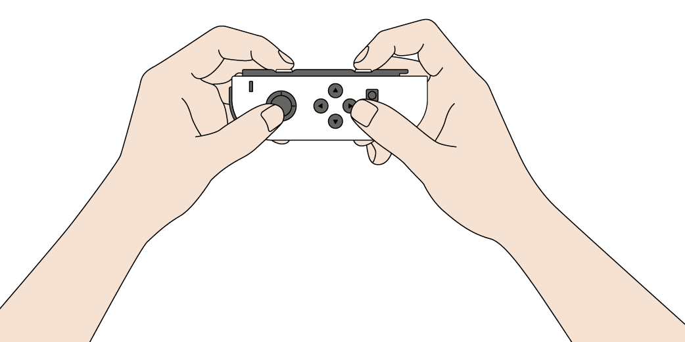
Joy-Cons in Single Controller Mode (Image Uses Joy-Con 1 Controllers)
Want to learn more about this program or request a device?
Copyright © 2026 Neil Squire / Makers Making Change. Content is licensed under the CC BY SA 4.0 License. This website is built with MKDocs. MKDocs is MIT-licensed software and is not covered by the CC BY-SA license applied to this site's content.
Visit Makers Making Change